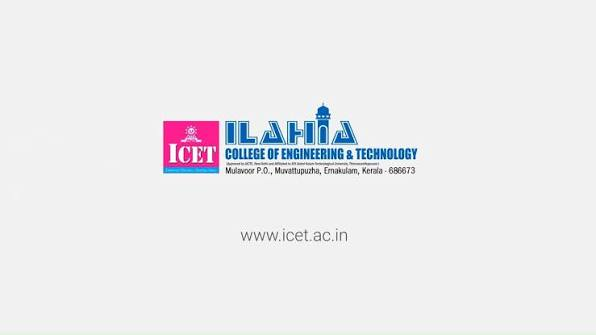

is a prominent, co-educational minority institution located on a scenic hillock in Mulavoor, Muvattupuzha, Kerala. Established in 2002 by the Ilahia Trust, it stands as one of the first self-financing engineering colleges in the state. The institution is approved by the AICTE in New Delhi and is affiliated with the APJ Abdul Kalam Technological University (KTU). Operating across a well-equipped campus, ICET offers a comprehensive selection of undergraduate and postgraduate programs, including B.Tech, M.Tech, MBA, and MCA degrees spanning multiple specialized disciplines. Over more than two decades, the college has graduated 18 batches of students, establishing a strong track record of academic excellence, corporate placements, and entrepreneurial success, while remaining dedicated to social responsibility through various scholarship programs.
